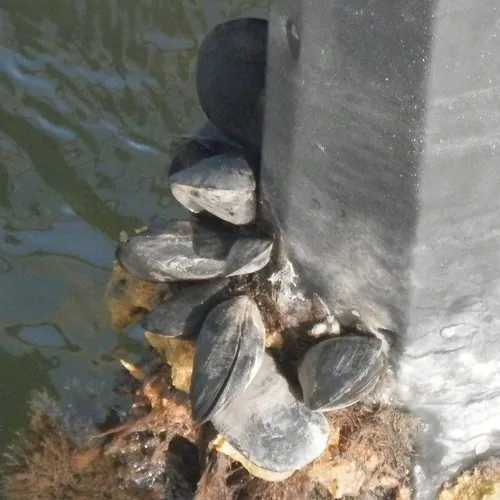

软体动物 · 动物界
紫贻贝 Mytilus edulis

附着在礁石和船底上的常见双壳类，壳呈黑紫色、靠足丝固着，肉质鲜美、价格亲民，是北方沿海常见的养殖贝类。
- 分类
- 门软体动物门纲双壳纲目贻贝目科贻贝科属贻贝属
- 栖息环境
- 潮间带至浅海岩礁，靠足丝附着在礁石、码头和船底上
- 地理分布
- 北大西洋两岸和北太平洋部分海域，中国北方沿海有分布和养殖
- 保护级别
- 暂无评估；中国未列入国家重点保护野生动物名录（重要养殖贝类）
物种志
紫贻贝的贝壳呈楔形或椭圆形，壳顶尖，壳面黑紫、蓝黑或棕褐色，有细密的生长纹；壳内面呈紫黑色，带有珍珠光泽。壳长一般 5–10 cm，是沿海最常见的大型双壳类之一。
紫贻贝分布于北大西洋两岸和北太平洋部分海域，中国北方沿海有分布和养殖。它栖息于潮间带至浅海岩礁，靠足丝附着在礁石、码头和船底上，密集生长时形成成片的“贻贝床”。紫贻贝是滤食性动物，靠鳃过滤浮游生物和有机颗粒，一只成体每天能过滤大量海水。它雌雄异体，繁殖期在春季至夏季，体外受精，幼体浮游一段时间后附着变态。紫贻贝营养丰富、价格亲民，在北方沿海被称为“海虹”，常用白灼、蒜蓉等方式烹饪；它也是海水养殖和生态修复的常用物种。目前它没有IUCN 的正式评估，中国未将其列入国家重点保护野生动物名录。
形态与习性
- 食性滤食浮游生物和有机颗粒，靠鳃过滤海水
- 壳长一般 5–10 cm
- 繁殖雌雄异体，春季至夏季体外受精，幼体浮游后附着
- 固着靠坚韧的足丝附着在礁石、码头和船底上
- 栖息地潮间带至浅海岩礁，密集生长形成贻贝床
- 食用北方沿海称为“海虹”，白灼、蒜蓉均宜
趣味知识
- 紫贻贝靠足丝把自己固定在礁石和船底上，足丝坚韧如丝线。
- 它在北方沿海被称为“海虹”，价格亲民、味道鲜美。
- 贻贝是滤食性动物，一只成体每天能过滤大量海水。